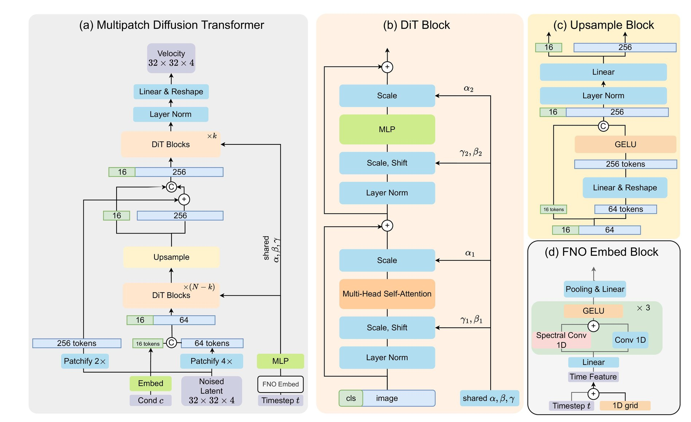
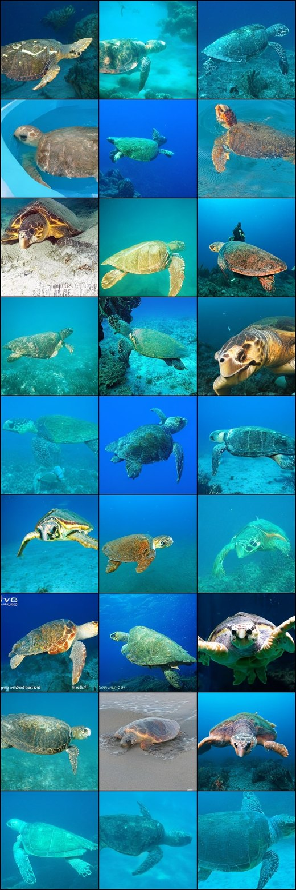
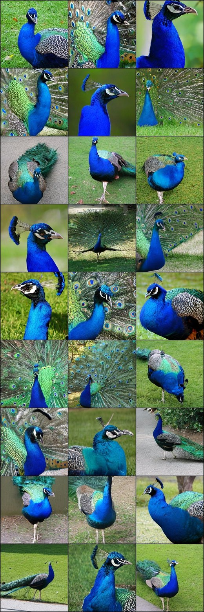
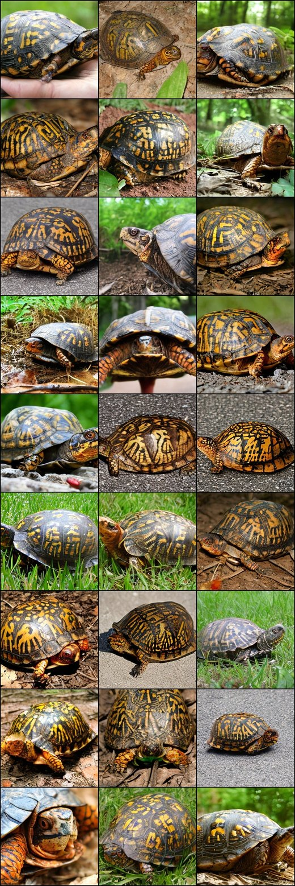
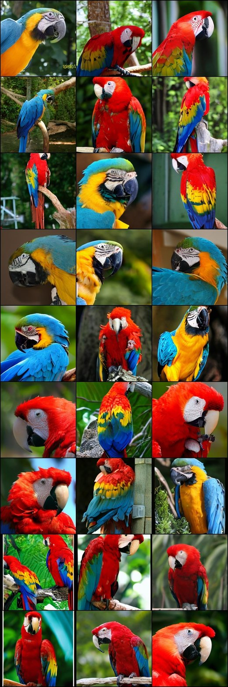
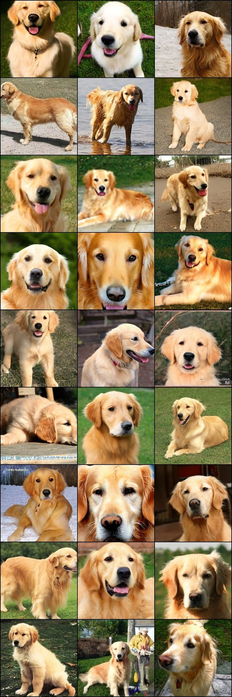
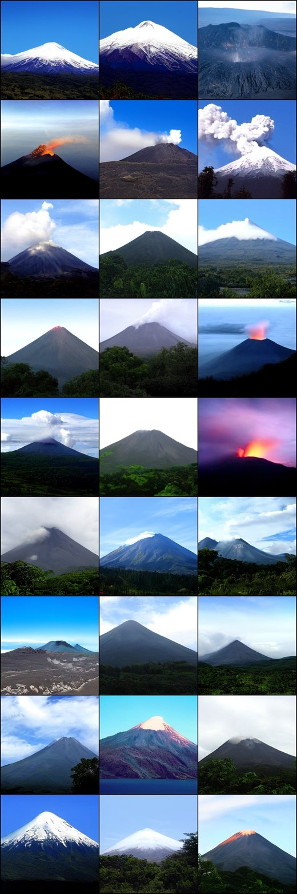

Global first
Early blocks use patch size 4, reducing the latent token count from 256 to 64.
Efficient flow matching and diffusion generation by spending cheap large-patch tokens early and high-resolution local tokens only near the end.
MPDiT is a global-to-local diffusion transformer. It runs most transformer blocks on coarse, large-patch tokens to capture global structure, then upsamples and uses only a few high-resolution blocks for local refinement. The design reduces GFLOPs by up to 50% while preserving strong generative quality.
Early blocks use patch size 4, reducing the latent token count from 256 to 64.
Only the final local blocks use patch size 2, recovering details at the end.
Shared AdaIN, multi-token class conditioning, and FNO time embedding improve training convergence.
Instead of applying the same token resolution in every transformer block, MPDiT treats the network as a coarse-to-fine hierarchy. The first stage models global context with larger patches. An upsample module then expands the sequence and injects a fine patch embedding skip connection before final high-resolution refinement.

MPDiT improves the quality-compute trade-off on ImageNet generation. The table below highlights representative ImageNet 256 results from the paper.
| Model | Epochs | GFLOPs | FID | sFID | IS | Precision | Recall |
|---|---|---|---|---|---|---|---|
| SiT-B/2 | 80 | 23.02 | 34.84 | 6.59 | 41.53 | 0.52 | 0.64 |
| DiCo-B | 80 | 16.88 | 27.20 | - | 56.52 | 0.60 | 0.61 |
| MPDiT-B | 80 | 16.60 | 24.74 | 6.32 | 57.40 | 0.58 | 0.65 |
| SiT-XL/2 | 80 | 118.66 | 18.04 | 5.07 | 73.90 | 0.63 | 0.64 |
| DiCo-XL | 80 | 87.30 | 11.67 | - | 100.42 | 0.71 | 0.61 |
| MPDiT-XL | 80 | 59.30 | 9.92 | 5.05 | 102.79 | 0.70 | 0.64 |
| DiG-XL/2-G | 240 | 89.40 | 2.07 | 4.53 | 278.95 | 0.82 | 0.60 |
| MPDiT-XL-G | 240 | 59.30 | 2.05 | 4.51 | 278.73 | 0.82 | 0.61 |
| Model | N | k | Model Dim D | GFLOPs | GFLOPs ratio vs DiT |
|---|---|---|---|---|---|
| MPDiT-B | 12 | 6 | 768 | 16.6 | 72.1% |
| MPDiT-XL | 28 | 6 | 1152 | 59.3 | 49.9% |
| Method | Params (M) | GFLOPs | FID |
|---|---|---|---|
| DiT-B/2 | 130.0 | 23.0 | 34.84 |
| + Shared AdaIN | 90.3 | 22.9 | 35.31 |
| + Multi-token class embedding | 101.9 | 24.3 | 28.56 |
| + FNO time embedding | 101.2 | 24.3 | 24.52 |
| + MPDiT, k = 6 | 104.8 | 16.6 | 24.74 |
| Configuration | Method | Params (M) | GFLOPs | FID |
|---|---|---|---|---|
| B | DiT-B/2 dagger | 101.2 | 24.3 | 24.52 |
| B | MPDiT k = 4 | 104.8 | 13.9 | 26.94 |
| B | MPDiT k = 6 | 104.8 | 16.6 | 24.74 |
| B | MPDiT k = 8 | 104.8 | 19.3 | 24.62 |
| XL | DiT-XL/2 dagger | 473.1 | 125.5 | 9.22 |
| XL | MPDiT k = 4 | 481.2 | 53.2 | 11.11 |
| XL | MPDiT k = 6 | 481.2 | 59.3 | 9.92 |
| XL | MPDiT k = 8 | 481.2 | 65.4 | 9.73 |
Additional ImageNet samples from the project assets.
Class 113 - snail

Class 33 - loggerhead turtle

Class 84 - peacock

Class 37 - box turtle

Class 88 - macaw

Class 207 - golden retriever
Class 417 - balloon
Class 947 - mushroom

Class 980 - volcano
Class 971 - bubble
A short presentation video is included with the page assets.
@inproceedings{dao2026mpdit,
title = {MPDiT: Multi-Patch Global-to-Local Transformer Architecture For Efficient Flow Matching and Diffusion Model},
author = {Dao, Quan and Metaxas, Dimitris N.},
booktitle = {Proceedings of the IEEE/CVF Conference on Computer Vision and Pattern Recognition},
year = {2026}
}